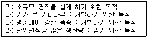
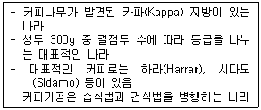
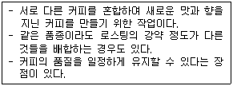
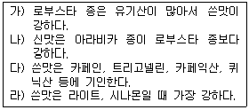
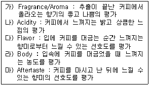
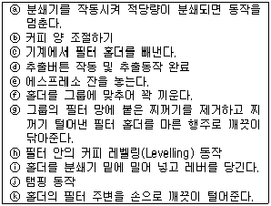

바리스타-2급 (2009-11-14 기출문제)
1과목: 커피학 개론
1. 다음 중 커피와 관련된 설명으로 옳은 것?
- 커피의 식물학명은 'Kaffee'이다.
- 커피는 16세기 경 아프리카의 고원에서 '칼디'라는 목동에 의해 인류에게 전해졌다.
- "아~ 맛있는 커피. 천 번의 키스보다 황홀하고, 무스카텔(Muscatel) 포도주보다 달콤하다."라고 말한 사람은 베토벤이다.
- 커피는 초기에 생 체리를 발효시켜 술로 이용하다가, 차츰 말린 커피 가루를 곡식가루와 기름과 섞어서 구급약이나 비상식량으로 사용하였다.
(정답률: 59%)

2. 다음은 커피 발전과정에 관한 내용들이다. 이 중 사실과 다른 것은?
- 한국의 최초 커피하우스는 '손탁 호텔'이다.
- 18세기 말 경 미국은 영국 홍차 대신 커피 마시기를 독립 운동으로 권장했다.
- 네덜란드인이 커피나무를 자바와 서인도 섬에 재배를 시작한 시기는 12세기 말경이다.
- 커피 문화가 급속도로 확산된 17세기부터 19세기에는 프랑스, 이탈리아 등의 커피하우스는 사회 여론을 모으고 여과하는 장소 역할을 하였다.
(정답률: 72%)
3. 다음 커피나무에 관한 내용 가운데 옳은 내용은?
- 체리는 익어감에 따라 빨간색이나 노란색에서 초록색으로 변해 간다.
- 커피나무에 꽃이 피었다가 지고 체리가 맺히기 시작하면, 이로부터 6~8주 지나야 수확이 가능하다.
- 아라비카종 커피는 일 년 내내 온도 차이가 크지 않은 고지대에서 재배하기 때문에 꽃피는 시기가 일정하다.
- 커피나무는 체리를 맺기 시작하면 5년 정도 지나야 수확이 안정되며, 경제성 있게 수확할 수 있는 기간은 20~30년이라고 보아야 한다.
(정답률: 82%)
4. 다음은 커피체리(Coffee cherry)에 대한 설명 중 틀린 것은?
- 커피체리는 커피종자에 따라 성잘 속도가 다르다.
- 커피 꽃이 지고 체리가 맺혀서 수확할 때까지 기간이 아라비카종이 로부스타종보다 길다.
- 커피체리는 과육, 점액질, 파치먼트, 은피, 생두의 구조로 이루어져 있다.
- 일반적으로 정상적인 체리 안에는 생두가 2개 들어 있다.
(정답률: 78%)
5. 생두의 품종과 가공 상태 등에 대하여 여러 가지 단서를 제공해주는 부위로, 생두의 가 운데 골처럼 파인 부분을 무엇이라 하나?
- 센터 컷(Center cut)
- 외피(Outer skin)
- 파치먼트(Parchment)
- 과육(Pulp)
(정답률: 89%)
6. 다음 중 아라비카 종 커피의 특징은?
- 가격이 저렴해 대부분 블렌딩(Blending) 용으로 사용된다.
- 동남아시아, 특히 베트남과 인도네시아에서 주로 생산된다.
- 커피 잎 녹병(CLR)에 저항성이 강하며, 인도네시아 등에서 넓게 재배되고 있다.
- 나무의 성질이 예민해 생산지의 기후환경과 토양조건에 따라 독특한 개성을 지닌다.
(정답률: 74%)
7. 로부스타(Robusta) 커피에 대한 설명으로 올바른 것은?
- 주로 해발 800m 이상의 산지에서 재배된다.
- 아프리카 콩고가 원산지로 1895년 처음 학계에 보고되었다.
- 연평균 기온 24~30℃, 연평균 강우량 1,000mm 내외의 열대지역에서 잘 재배된다.
- 재배가 쉽고, 수확량이 아라비카(Arabica)보다 월등히 많은데다 카페인 양도 훨씬 적어 많은 국가들이 점점 그 재배 양을 늘려가고 있다.
(정답률: 62%)
8. 건식법(Dry processing)으로 생산된 생두를 창고를 열어 계절풍을 쐬어 가공한 커피로 신맛은 적고 입에서의 느낌이 묵직하고 독특한 향을 느낄 수 있는 인도산 커피는?
- Old Coffee
- Aged Coffee
- Organic Coffee
- Monsooned Coffee
(정답률: 81%)
9. 커피의 식물학적 특성에 대한 설명들이다. 올바른 내용은?
- 잘 익은 커피 열매의 색은 품종을 막론하고 모두 붉은 색만을 띠어야 한다.
- 커피 꽃은 흰색이며 꽃잎은 아라비카는 5장, 로부스타는 7~9장이다.
- 일반적으로 커피 내과피(Parchmint) 안에는 한 개의 생두가 들어 있다.
- 아라비카 커피가 익는 기간은 6~9개월이나 생산지에 따라 9~11개월이 될 수도 있다.
(정답률: 30%)
10. 커피 재배조건에 대한 설명 중 틀린 것은?
- 햇볕이 강한 지역이 좋다.
- 개화 시점에선 건조한 기후가 필요하다.
- 배수가 잘되는 지역이 적합하다.
- 개화 시까지 충분한 강우량이 필요하다.
(정답률: 76%)
11. 특정 생두에 '셰이드 그로운 커피(Shade-grown coffee)'라는 명칭이 붙게 되는데 그 의미는 무엇인가?
- 커피종자를 삼베 포, 짚 등으로 덮어 그늘을 유지하였다.
- 커피나무의 개량 및 다수확을 목적으로 일정기간 그늘 막을 설치하였다.
- 작은 커피 묘목의 일조량 조절을 목적으로 그늘 막을 설치하였다.
- 커피나무의 일조량을 줄이기 위해 키 큰 나무의 그늘 아래에서 경작되었다.
(정답률: 81%)
12. 커피종자를 개량하는 목적으로 옳은 것을 묶은 것은?

- 가, 나
- 나, 다
- 다, 라
- 나, 라
(정답률: 81%)
13. 다음은 커피 체리를 가공하는 방식에 관한 내용이다. 옳은 것을 고르시오.
- 커피 체리를 가공하는 방식은 습식법(Wet processing), 건식법(Dry processing), 펄프드 내추럴(Pulped natural) 등이 있다.
- 일반적으로 습식법(Wet processing) 가공 커피는 결점두들이 섞여 있을 가능성이 높다.
- 건식법(Dry processing)은 파치먼트를 제거한 후 씨앗을 다시 세척한 다음 건조시키는 방식이다.
- 습식법(Wet processing)은 커피 체리를 물로 씻은 다음 건조시킨 후 파치먼트를 제거하는 방식이다.
(정답률: 64%)
14. 습식법(Wet processing) 공정 순서가 바른 것은?
- 수확→분리→과육제거→발효→건조→세척→선별→보관
- 수확→분리→과육제거→건조→발효→세척→선별→보관
- 수확→분리→과육제거→세척→발효→건조→선별→보관
- 수확→분리→과육제거→발효→세척→건조→선별→보관
(정답률: 67%)
15. 건조과정에 대한 설명 중 틀린 것은?
- 파치먼트의 수분함량을 13% 이하로 낮추는 과정이다.
- 습식법(Wet processing)은 건식법(Dry processing)보다 건조과정이 짧다.
- 건조방법은 햇빛 건조(Sun-dry) 방법과 기계 건조(Machine-dry) 방법이 있다.
- 가공 후 보관은 습식법(Wet processing)과 건식법(Dry processing) 모두 파치먼트 상태로 보관한다.
(정답률: 57%)
16. 내추럴 커피(natural coffee)와 워시드 커피(Washed coffee)의 특성에 대한 설명이 잘못 된 것은?
- 내추럴 커피(natural coffee)는 생산단가가 싸고 친환경적이다.
- 워시드 커피(Washed coffee)는 품질이 높고 균일하다.
- 워시드 커피(Washed coffee)는 신맛이 좋으며 향이 좋고 바디(Body)가 강하다.
- 내추럴 커피(natural coffee)는 단맛과 쓴맛이 좋으며 복합적인 맛을 느낄 수 있다.
(정답률: 63%)
17. 커피 생두의 스크린 사이즈(Screen size) 단위에 대하여 올바른 것은?
- 1/44 inch
- 1/54 inch
- 1/64 inch
- 1/74 inch
(정답률: 74%)
18. SCAA 기준에 의한 결점두(Detect bean)들의 발생 원인이 잘못 연결된 것은?
- Withered bean - 발육 기간 동안 수분 공급 부족
- Black bean - 늦은 수확, 흙과의 장시간 접촉
- Shell - 불완전한 탈곡과정
- Unripe bean - 미성숙 체리의 수확
(정답률: 73%)
19. SCAA 분류법 중 Specialty Grade의 등급기준에 해당하지 않는 것은?
- 생두의 허용 함수율은 10~13% 이내이다.
- 궤이커(Quaker)는 로스팅 된 커피 100g 중 3개까지 허용된다.
- Body, Flavor, Aroma, Acidity 등의 특성을 가지고 있어야 한다.
- 350g 안에 결점수(Full detect)가 5 이내이며 프라이머리 디펙트(Primary defects)는 허용되지 않는다.
(정답률: 71%)
20. 다음 설명에 해당되는 커피 산지는?

- 예멘
- 에티오피아
- 케냐
- 탄자이아
(정답률: 78%)
21. 다음 중 생콩의 품질을 결정하는 요소는?
- 생콩, 볶음 방식
- 커피품종, 생산고도, 가공방식
- 추출 온도, 추출 시간, 추출 액량
- 커피의 상태, 물의 조건, 분쇄도
(정답률: 83%)
22. 커피 재배 지역을 발전시키고 커피 재배 농가의 삶의 질을 개선하여 장기적인 관점에서 안정적으로 커피를 생산할 수 있도록 하려는 시스템에 의하여 공급되는 커피를 무엇이라 하는가?
- Fair trade coffee
- Organic coffee
- Shaded coffee
- Sustainable coffee
(정답률: 56%)
23. 커피를 살 때 먼저 고려해야 될 사항 두 가지를 꼽는다면 무엇을 고려해야 될까?
- 제조 회사와 품종
- 커피의 질과 품종
- 커피의 품종과 볶음도
- 커피의 질과 신선함
(정답률: 69%)
24. 다음 중 "고객 지향적 사고"를 가장 적절히 설명한 것은?
- 종업원은 모든 것을 "이윤의 관점"으로 생각해야 한다.
- 사장님은 모든 것을 "기업의 입장"에서 생각해야 한다.
- 사업장에서의 모든 것은 "고객의 관점"에서 생각해야 한다.
- 사업장에서의 모든 것은 "주인의 관점"에서 생각해야 한다.
(정답률: 84%)
25. 우유의 살균법 중 국내 우유업체에서 시유 생산 기준으로 가장 많이 사용하고 있는 살균법은?
- 저온장시간 살균법
- 고온단시간 살균법
- 초고온 멸균법
- 초고온순간 살균법
(정답률: 67%)
26. 커피생두 신선도와 보관성을 높이기 위해 요구되는 보관창고의 환경은?
- 생두의 햇볕 노출을 최대화할 수 있는 시원한 곳이 좋다.
- 생두가 건조하지 않도록 충분한 습기를 보유한 곳이 좋다.
- 가능한 한 다습한 곳을 피하고, 상온을 유지한 곳이 좋다.
- 생두가 곰팡이와 각종 세균의 번식에 노출되지 않도록 직사광선이 많은 곳이 좋다.
(정답률: 76%)
27. 바리스타로서 식음료 취급 방법에 대한 설명으로 옳은 것은 무엇인가?
- 뜨거운 음료와 음식은 60℃ 또는 더 낮게 보관한다.
- 차가운 음료와 음식은 4℃ 또는 더 높게 보관한다.
- 음식을 취급할 대는 항상 위생 장갑, 기구를 이용해야 한다.
- 스팀 완드(Steam wand)를 닦는 행주와 카운터용 수건을 함께 사용해도 된다.
(정답률: 82%)
28. 다음 중 커피가 인체에 미치는 영향이 아닌 것은?
- 중추신경계를 자극하여 정신을 맑게 한다.
- 위를 자극하여 위액의 분비를 촉진시킨다.
- 이뇨제의 역할을 하여 소변의 양을 증가시킨다.
- 심장 박동 수를 감소시켜 진정의 효과를 나타낸다.
(정답률: 71%)
29. 커피가 공기 중의 산소와 반응하여 변패되는 현상을 자동산화라 한다. 아래 성분 중에서 자동산화반응을 일으키는 커피의 성분은?
- 포화지방산
- 불포화지방산
- 아미노산
- 카페인
(정답률: 78%)
30. Ochratoxin(오크라톡신) A에 대한 설명 중 옳은 것은?
- 곰팡이 독소의 종류이다.
- 단백질의 일종이다.
- 단백질 청소약이다.
- 유산균의 일종이다.
(정답률: 75%)
2과목: 로스팅과 향미 평가(커피 배전)
31. 다음은 커피를 로스팅(Roasting)할 때 일어난 변화를 설명한 것이다. 맞는 내용은?
- 부피가 줄어든다.
- 무게가 증가한다.
- 밀도가 커진다.
- 갈변이 일어난다.
(정답률: 75%)
32. 로스팅(Roasting)에 관한 설명으로 올바른 것을 고르시오.
- 흡열반응은 2차 팽창 후에 일어난다.
- 생두는 로스터 안에서 100~180℃의 열풍으로 가열 된다.
- 생두조직의 내부 온도가 160℃ 정도에서 수분의 증발이 끝나고 색상이 황색으로 변하기 시작한다.
- 생두의 탄수화물, 지방, 단백질, 유기산 등이 분해되기 시작하는 온도는 232℃ 이후부터이다.
(정답률: 61%)
33. 로스팅 과정 중 샘플러(Sampler, Trier)를 통해 콩의 여러 변화 과정을 살펴볼 수 있다. 다음 중 확인할 수 없는 것은?
- 형의 변화
- 색깔 변화
- 형태 변화
- 맛의 변화
(정답률: 72%)
34. 커피를 볶을 때 기본적인 세 가지 단계에 속하지 않는 것은?
- 건조(Dry)
- 냉각(Cooling)
- 열분해(Pyrolysis)
- 포장(Packing)
(정답률: 80%)
35. 다음의 내용에 해당하는 것을 고르시오.

- Cupping
- Blending
- Flavor
- Froth
(정답률: 86%)
36. 커피생두의 함유된 유리 아미노산에 대하여 잘못 설명한 것은?
- 아라비카 종은 미숙콩과 완숙 콩의 함량이 비슷하다.
- 로부스타 종은 미숙 콩에 비하여 완숙 콩에 함량이 많다.
- 커피생두의 함량은 0.3~0.8%로서 원두 향기의 형성에 중요한 성분이다.
- 커피생두에 함유된 유리 아미노산은 로스팅 과정 중 거의 변화되지 않는다.
(정답률: 66%)
37. 원두에 함유되어 있는 산화 무기물, 산화칼륨, 산화 인, 산화마그네슘 등에 기인하여 느껴지는 커피의 맛은?
- 단맛
- 짠맛
- 신맛
- 쓴맛
(정답률: 42%)
38. 커피 생두에 가장 많이 함유되어 있으면서 로스팅 시 커피 특유의 갈색으로 변하게 하며, 커피의 향기 조성에 큰 영향을 미치면서, 감칠맛을 내는데 가장 중요한 역할을 하는 성분은?
- 탄수화물
- 지방
- 단백질
- 트리고넬린
(정답률: 47%)
39. 다음 중 로스팅 시 맛 성분의 변화에 대한 설명 중 옳은 것은?

- 가, 나
- 가, 라
- 나, 다
- 다, 라
(정답률: 68%)
40. 원두의 갈변화를 일으키는 마이야르 반응(Maillard reaction)에 대한 아래 설명 중 가장 적합한 내용은?
- 효소적 갈변화 반응이다.
- 갈색색소는 저분자 물질로 구성되어 잇다.
- 아미노산과 환원당간의 반응에 의한 것이다.
- 트리고넬린을 가열하면 일어나는 반응이다.
(정답률: 49%)
41. 다음 커피 향미 성분 중 로스팅 과정 중에 생성되는 향이 아닌 것은?
- Fruity(과일 향)
- Caramelly(캐러멜 향)
- Nutty(고소한 향)
- Chocolaty(초콜릿 향)
(정답률: 58%)
42. 커피의 평가 용어 중 옳은 설명으로 묶인 것은?

- 가, 나
- 나, 다
- 다, 라
- 라, 마
(정답률: 31%)
43. 커피의 다음 성분들 가운데, 커피를 마신 다음 혀에 남아 있는 커피의 잔류성분들과 이들로부터 생긴 증기로부터 느낀 수 있는 향미를 만들어 내는 요소는?
- 에스테르(Ester) 화합물
- 지질 같은 비 용해성 액체와 수용성 고체 물질
- 비휘발성 액체 상태의 유기 성분
- 케톤(Ketone)이나 알데히드(Aldehyde) 계통의 휘발성 성분
(정답률: 35%)
44. 다음 중 커피 촉감(Mouthfeel)에 대한 용어 중 지방함량에 따른 정도를 표시하는 용어가 아닌 것은?
- Creamy
- Heavy
- Buttery
- Watery
(정답률: 44%)
45. 한국커피교육협의회에서 시행하는 컵테이스터스 챔피언십의 커피 추출 조건을 옳게 설명한 것은?
- 커피의 분쇄는 각각 다르게 해야 한다.
- 추출 온도는 85~92℃로 한다.
- 물 1리터당 60g의 원두를 사용한다.
- 커피 추출 시간은 8~12분이어야 된다.
(정답률: 38%)
3과목: 커피 추출
46. 다음은 커피장비의 관리 지침이다. 매일 해야 하는 일은?
- 보일러의 압력, 추출압력, 물의 온도 체크
- 그라인더 칼날의 마모 상태
- 연수기의 필터 교환
- 그룹헤드의 개스킷 교환
(정답률: 79%)
47. 다음 중 커피를 가장 잘게 분쇄해야 하는 추출방식은?
- 융 드립
- 페이퍼 드립
- 사이펀
- 에스프레소
(정답률: 58%)
48. 커피 원두의 가치를 최대한 높이기 위한 분쇄방법이 아닌 것은?
- 커피 미분이 많이 발생되지 않도록 한다.
- 커피 추출방법에 따른 적합한 분쇄입도를 선택한다.
- 분쇄할 때의 되도록 그라인더(Grinder)에 의한 마찰열 발생을 최대화 한다.
- 그라인더(Grinder)의 기계적 정비와 관리를 통하여 커피입자의 일정한 분쇄도를 유지한다.
(정답률: 67%)
49. 커피 산패의 개념으로 올바른 것을 고르시오.
- 산패는 부패와 같은 뜻이다.
- 커피가 산소와 결합해도 아무런 변화가 없는 것을 말한다.
- 커피가 산소와 결합하여 썩는 것을 말한다.
- 커피가 공기 중의 산소와 결합하여 산화로 인해 맛과 향이 변하는 것이다.
(정답률: 66%)
50. 배큠브루어(사이펀)로 커피를 추출할 경우 커피의 농도에 변화를 줄 수 있는 조건이 아닌 것은?
- 커피가루의 양과 로스팅도
- 물의 양
- 물과 커피가루가 접촉하는 시간
- 플라스크의 물을 끓이는 열원의 종류
(정답률: 64%)
51. 다음은 커피의 농도를 표시할 때 사용하는 브릭스(Brix)의 단위에 대한 해설 내용이다. 가장 알맞은 내용은?
- 샘플 추출한 커피내의 산의 농도를 말한다.
- 샘플 추출한 커피내의 무기물질의 함유량을 말한다.
- 샘플 추출한 커피내의 가용성 고형분의 농도를 말한다.
- 샘플 추출한 커피의 당류 함유량을 말한다.
(정답률: 57%)
52. 다음은 커피 추출의 삼대 원리이다. 순서가 올바른 것은?
- 침투, 용해, 분리
- 용해, 침투, 분리
- 분리, 침투, 용해
- 용해, 분리, 침투
(정답률: 66%)
53. 에스프레소 추출 시 펌프모터에서 심한 소음이 일어난다면 어디에서 가장 먼저 원인을 찾는 것이 좋을까?
- 커피 투입량이 많을 때
- 추출 시간이 길 때
- 온도가 낮을 때
- 물 공급이 되지 않을 때
(정답률: 79%)
54. 커피매장에서는 에스프레소 추출량을 쉽게 조절하기 위해 메모리 기능을 사용한다. 기억시키는 방법 중 틀린 것은?
- 커피의 분쇄입자와 추출시간을 맞추어 추출량을 기억시킨다.
- 추출 액량을 측정하기 위해 눈금이 있는 비이커를 사용한다.
- 메모리 후에는 새로운 커피를 투입하여 추출량을 다시 테스트해야 한다.
- 한번 세팅한 메모리 값은 지속적으로 사용하는 것이 좋다.
(정답률: 61%)
55. 원두 통(Hopper)을 주기적으로 청소해 주어야 하는데 그 주된 이유는 무엇인가?
- 실버 스킨
- 커피 오일
- 온도
- 습기
(정답률: 73%)
56. 다음 중 에스프레소 커피의 추출 시간에 가장 깊이 영향을 미치는 조건은?
- 원두의 분쇄도
- 추출 온도
- 커피의 로스팅도
- 탬핑 강도
(정답률: 52%)
57. 아래 내용은 에스프레소 추출 시 일어나는 현상에 대한 설명이다. 여기서 말하는 에멀션(Emulsion)현상은 무엇인가?
- 탈수(脫水)
- 산화(酸化)
- 유제(乳劑)
- 갈변(褐變)
(정답률: 57%)
58. 다음 은 에스프레소 추출 동작들이다. 올바른 순서대로 정렬한 것은?

- ⓐ-ⓑ-ⓚ-ⓙ-ⓗ-ⓖ-ⓕ-ⓔ-ⓓ-ⓒ-ⓘ
- ⓔ-ⓐ-ⓑ-ⓘ-ⓙ-ⓚ-ⓒ-ⓕ-ⓗ-ⓖ-ⓓ
- ⓚ-ⓙ-ⓐ-ⓒ-ⓑ-ⓕ-ⓖ-ⓘ-ⓗ-ⓔ-ⓓ
- ⓒ-ⓖ-ⓐ-ⓘ-ⓗ-ⓑ-ⓙ-ⓚ-ⓕ-ⓔ-ⓓ
(정답률: 70%)
59. 에스프레소 추출 시 너무 진한 크레마(Dark Crema)가 추출되었다. 원인이 될 수 없는 것은?
- 추출되는 물의 온도가 높은 경우
- 너무 가는 입도의 커피 분쇄
- 기준보다 많은 양의 커피 사용
- 기준보다 약한 Tamping
(정답률: 56%)
60. 에스프레소에 크림을 첨가한 이탈리아 커피는 무엇인가?
- Caffecon Panna
- CaffeRistretto
- CaffeLatte
- CaffeCorretto
(정답률: 50%)